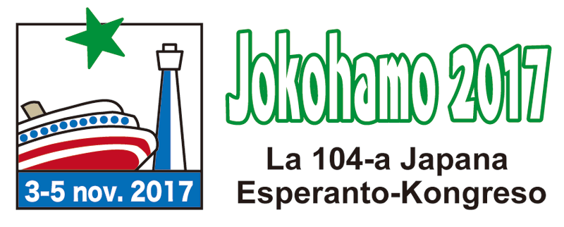
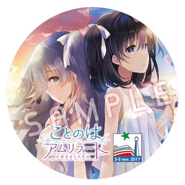

第104回日本エスペラント大会にて
アムリラート座談会～エスペラント×ユリアーモ～開催決定!!


■日 程：2017年11月3日(金・祝日) ～ 5日(日)
■会 場：
神奈川県立かながわ労働プラザ（〒231-0026 横浜市中区寿町1-4）
出 演
J-MENT
「ことのはアムリラート」シナリオライター
藤巻謙一
「ことのはアムリラート」言語監修
瀬下政也
日本青年エスペラント連絡会代表（本ゲームの関連情報をSNSで多数発信中）
南波文晴（司会進行役）
日本大会実行委員、NPOエスペラントよこはま理事
アムリラート座談会～エスペラント×ユリアーモ～』参加者の募集!
■日 程：
2017年11月5日(日)
■時 間：
10:00～11:45予定
■会 場：
神奈川県立かながわ労働プラザ（〒231-0026 横浜市中区寿町1-4）
2017年11月5日(日)
■時 間：
10:00～11:45予定
■会 場：
神奈川県立かながわ労働プラザ（〒231-0026 横浜市中区寿町1-4）
応募終了しました
募集締切は10月18日（水）になります。
当選された方には10月20日（金）にメールにてお知らせをお送りします。
※参加特典として缶バッチをご用意いたしました。当日会場でのお渡しになります。
当選された方には10月20日（金）にメールにてお知らせをお送りします。
※参加特典として缶バッチをご用意いたしました。当日会場でのお渡しになります。

Ｑ＆Ａ
- 【参加申込・大会会場について】
- 座談会への参加には、大会への参加申込が別途必要ですか？
- 大会への参加申込は不要です。大会においては、一般市民向けのゲスト参加(無料)と同様の扱いになります。
※抽選に当選された方には、当日の参加受付方法をメールにてお知らせいたします。 - 座談会(11月5日)以外の日にも入場は可能ですか？
- 可能です。大半の行事(セミナー・講演会など)にも入場可能ですが、非公開の行事も一部ございますのでご了承ください。
- 一般参加費を支払って、ゲスト参加から一般参加に切り替えることは可能ですか？
- 可能です。当日の大会会場受付にてお申し込みください（料金表はこちら）。
なお、日本エスペラント協会への入会も随時受け付けています（入会案内はこちら）。 - 大会会場の開場は何時頃でしょうか？
- 朝9時の開場を予定しています。
- 私は第104回日本エスペラント大会の一般参加者ですが、座談会参加にはこちらのフォームからの申込が必要でしょうか？
- 今回の大会参加者の方には別枠で席を用意しております。詳しくは日本大会事務局（日本エスペラント協会事務局）にお問い合わせください。
- 【日本エスペラント大会について】
- 日本エスペラント大会ってどんな大会ですか？
- 主に日本各地からエスペランチスト(エスペラント語を学び使用する人)が集まる、年に一回の大会です。講演会や専門的セミナーなどの真面目な行事から、コンサートや懇親会などの楽しい行事まで、さまざまな行事を通じて参加者同士が交流を深めます。
- エスペラント語の能力を競って順位をつけるのですか？
- エスペラント大会は Konkurso(コンクール) ではなく Kongreso(会議) ですので、大会として参加者の競争や順位付けといったものはありません。
※大会プログラムのなかに「弁論コンクール」「動画コンクール」などもございますが、大会参加者全員が参加するものではありません。 - 参加者は日本人が多いのですか？
- 参加者の大半は日本人ですが、外国からおいでになる参加者や、日本に留学中の外国人学生などの参加者もございます。
- 【アムリラート座談会について】
- 座談会の言語は日本語ですか？エスペラント語ですか？
- 基本的には日本語で行う予定です。「まだまだユリアーモ/エスペラントの勉強が進んでなくて…」という方でも、安心してご参加いただけます。
- 物販は予定していますか？
- 「ことのはアムリラート」専門の物販コーナーを設ける予定はございませんが、大会参加者全般に向けた書籍販売コーナー（4階の「サローノ」室内）で、さまざまなエスペラント書籍やグッズ類を取り扱います。少し早めに会場に来て、じっくりとご覧になってください。